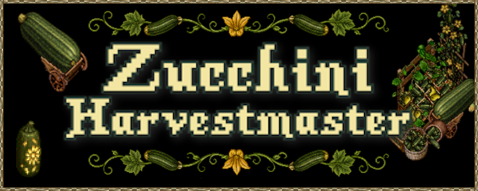
译自官方论坛公告帖：PATCH - Zucchini Harvestmaster 2026 Prevalian Merchant Items（西葫芦丰收大师 2026 · 普雷瓦利亚商人商品）。
说明：本页为活动/物品上新预告的汉化整理，专有名词首次出现标注英文；图片均抓自官方论坛附件，随页面一并本地托管。
上架时间：这批限时商品将于 2026 年 9 月 18 日 至 9 月 27 日 期间出售，活动结束后即下架，欲购从速。
温馨提示：同批还包含 2025 桃子丰收大师的「最后机会」商品，售完即永久下架。
一、2026 限定色相：微光红棕 Shimmer Roan（Hue 1696）
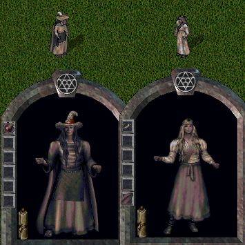
「微光红棕 Shimmer Roan」是一套
限定色相（Hue 1696），玩家可购买多种染成该色相的商品；此色相
永不返场。
可染成「微光红棕（Hue 1696）」的商品清单：
- 布料 Cloth
- 背包染色 Backpack Dye
- 发色 Hair Dye
- 胡须染色 Facial Hair Dye
- 家具染色 Furniture Dye
- 头饰染色 Headwear Dye
- 提灯 Lantern
- 符文书染色 Runebook Dye
- 饰品染色 Accessory Dye
- 地毯染色 Carpet Dye
- 纹身染色 Tattoo Dye
- 醇烟草叶 Melloweed Leaves
- 饮具续装 Drinking Vessel Refill
- 坐骑装备染色 Mount Gear Dye
- 精通链染色 Mastery Chain Dye
- 奇物染色 Curio Dye
- 法术色相合集 Spell Hue Collection
- 船漆 Ship Paint
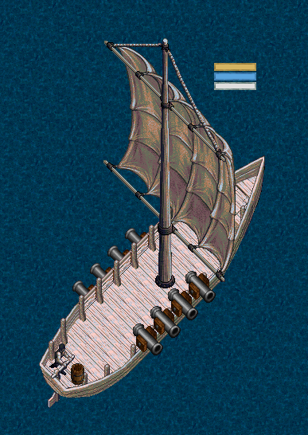
二、2026 季节服饰 Seasonal Wearables
西葫芦丰收大师 2026 季节穿戴物（括号内为装备部位）：
背挂镰刀Backword Scythe部位：背挂 Backworn
麻布胸衣Burlap Bodice部位：外躯干 Outer Torso
拼布丰收裙Patchwork Harvest Skirt部位：外腿 Outer Legs
麻布厚底靴Burlap Stompers部位：鞋 Shoes
破旧丰收裙Tattered Harvest Skirt部位：外腿 Outer Legs
稻草人面具Scarecrow Visage部位：头盔 Armor Helm
麻布护臂Burlap Arm Wraps部位：外臂 Outer Arms
丰收者之帽Harvester's Hat部位：头盔 Armor Helm
三、2026 季节装饰 Seasonal Decorations
盆栽与藤架
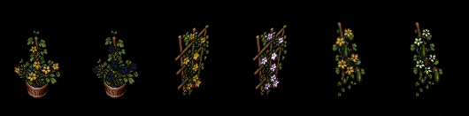
- 盆栽西葫芦束 Potted Zucchini Bushel
- 鲜艳盆栽西葫芦束 Vibrant Potted Zucchini Bushel（随机色相）
- 西葫芦壁挂藤架 Zucchini Wall Trellis
- 鲜艳西葫芦壁挂藤架 Vibrant Zucchini Wall Trellis（随机色相）
- 西葫芦立柱藤架 Zucchini Pole Trellis
- 鲜艳西葫芦立柱藤架 Vibrant Zucchini Pole Trellis（随机色相）
花环、瓜灯与草堆
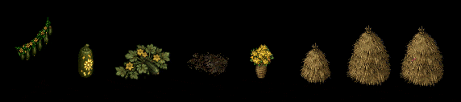
- 西葫芦花环 Zucchini Garland
- 雕刻西葫芦 Carved Zucchini（动态光源）
- 西葫芦植株 Zucchini Growth
- 泥土地块 Dirt Patch
- 西葫芦花瓶 Zucchini Blossom Vase
- 小干草堆 Small Haystack
- 大干草堆 Large Haystack
- 草堆寻针 Needle in a Haystack（随机色相）
地精与小动物
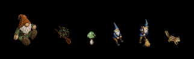
- 地精玩偶 Gnome Plushie（随机色相）
- 地精独轮车 Gnome Wheel Barrow（随机色相）
- 地精蘑菇 Gnome Toadstool（随机色相）
- 坐着的地精 Sitting Gnome（动态、随机色相）
- 扫地地精 Sweeping Gnome（动态、随机色相）
- 活泼花栗鼠 Lively Chipmunk（动态）
柳条家具与市集
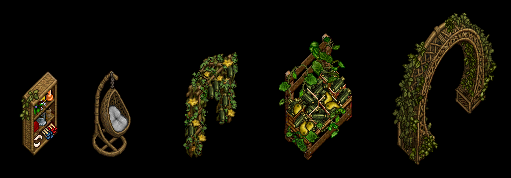
- 柳条储物架改型契约 Wicker Storage Shelf Restyle Deed
- 悬挂柳条篮椅 Hanging Wicker Basket Chair（可用家具染料染色）
- 西葫芦花拱形藤架 Zucchini Flower Arched Trellis
- 西葫芦市集摊位 Zucchini Market Stall
- 柳条丰收拱门 Wicker Harvest Archway
柳条箱
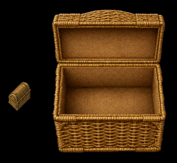
奇物染料
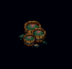
- 闪耀繁盛奇物染料 Shimmer Flourish Curio Dye
四、最后机会：2025 桃子丰收大师服饰（LAST CHANCE）
桃子丰收大师 2025 季节穿戴物（下架前最后机会）：
手持水桶Handheld Bucket部位：单手 One Handed
头巾Head Kerchief部位：头盔 Armor Helm
工装背带裤Dungarees部位：外躯干 Outer Torso
五、最后机会：2025 桃子丰收大师装饰（LAST CHANCE）
桃子市集与点心
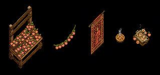
- 桃子市场摊位 Peach Market Stand
- 桃子花环 Peach Garland
- 节日桃子挂毯 Festive Peach Tapestry
- 冒着热气的桃派 Steaming Peach Pie（动态）
- 桃子烤派 Peach Cobbler（动态、随机色相）
桃树
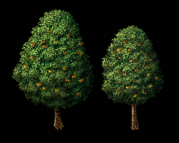
- 大桃树 Large Peach Tree
- 中桃树 Medium Peach Tree
果酱摊位
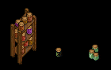
- 果酱摊位 Preserves Stand
- 果酱罐（单罐）Jar of Preserves（随机色相）
- 果酱罐（多罐）Jars of Preserves（随机色相）
以上为该活动公告帖的全部条目。限时色相与活动商品的机会窗口较短，具体售价与库存以游戏内商人界面为准。